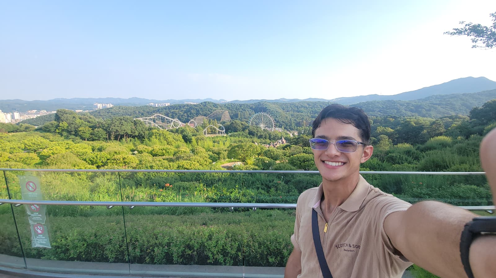

About Me

Hello! Nice to meet you!
Economics student, marketing analyst, and game industry commentator.
I'm Alberto, a rising senior studying Economics and Information Systems at UNC-Chapel Hill.
My interests sit across three connected areas: marketing analytics, data-driven decision-making, and economics as applied to purchasing and procurement. I like working where numbers meet strategy, whether that's reading campaign performance, modeling data trends, or understanding how organizations source and spend. Outside the classroom, I create short-form game industry commentary and editorial content, breaking down industry news and business moves for a digital audience.
That work is people-focused at its core, and it shows in my experience: FBLA business conferences and case competitions, a SaaS sales internship, and a marketing content creation and analyst internship, each sharpening how I communicate, persuade, and build relationships.
I'm now aspiring toward a career in procurement, contract negotiation, and supply chain, where that same combination of analytical thinking and relationship-building drives the work.
I'm a first-generation Cuban American, raised in Miami. My path into leadership started with mentorship at the Honors College at Miami Dade College, where clerical and administrative work at the school, civic engagement, and leadership within FBLA built my foundation.
That foundation took me to Europe for the first time with the Global Citizenship Alliance, and from there into sales at First Wave AI, where I learned to sell and build relationships professionally.
I carried that momentum into a transfer to UNC-Chapel Hill, choosing it over other offers from Babson College, the University of Wisconsin, USC, UCF, and FSU.
At UNC, econometrics has been my biggest academic challenge yet. Alongside it, I started at Demystified Studios as a QA tester for an educational program in business entrepreneurship, then moved into a marketing internship.
That role took me to Yonsei University in South Korea, where I studied macroeconomics and strategic management.
Now, I'm an aspiring procurement professional. I try to stay holistic in how I work, and that range of experience, spanning cultures, countries, and industries, has sharpened the people skills I bring into every room.